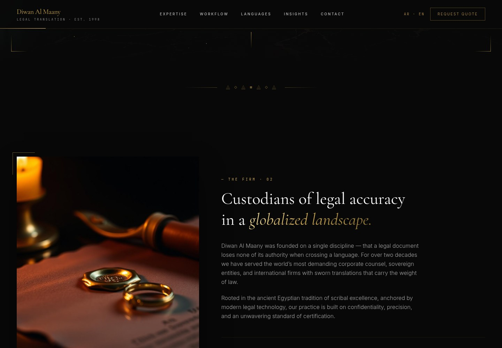
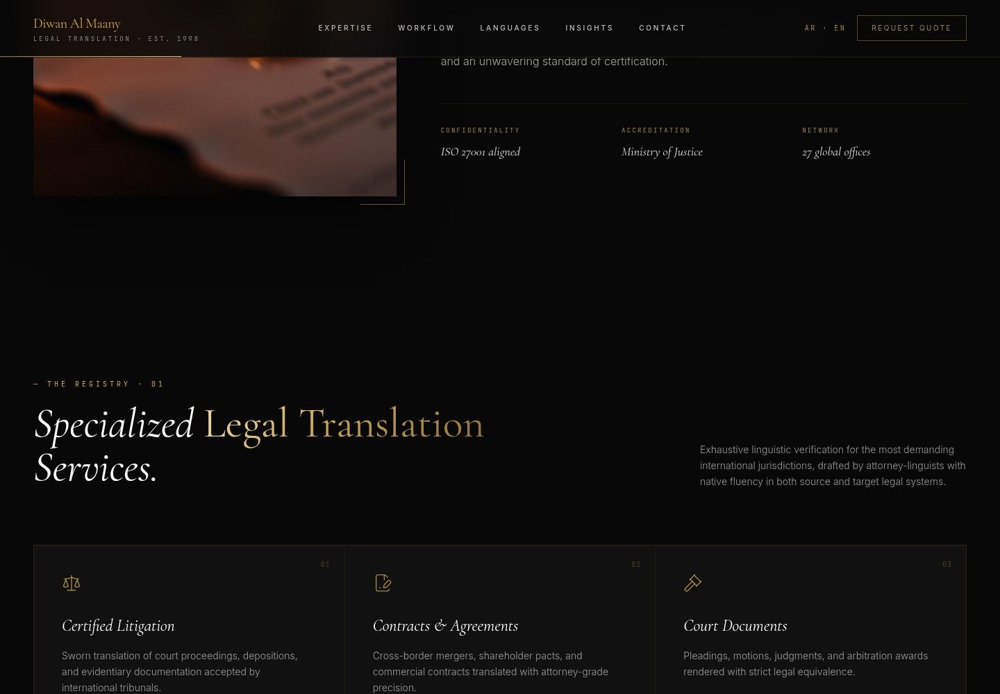
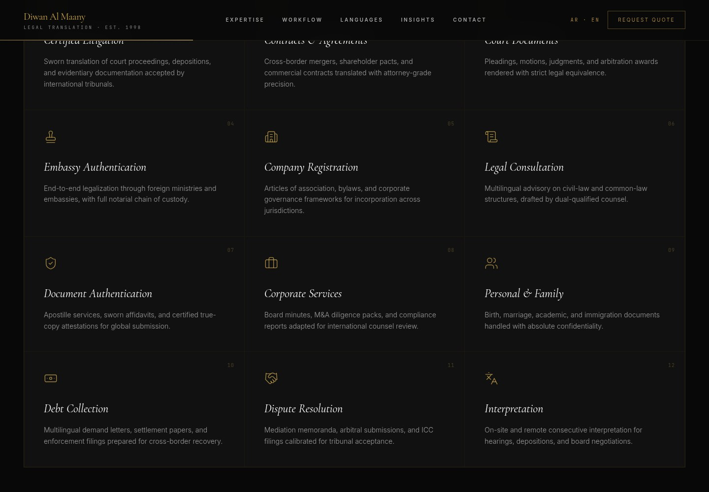
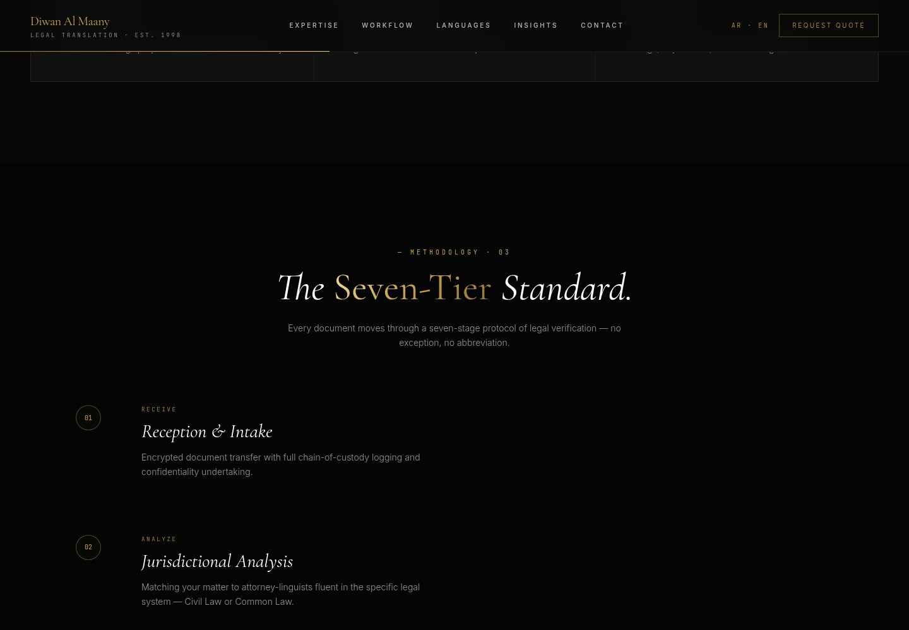
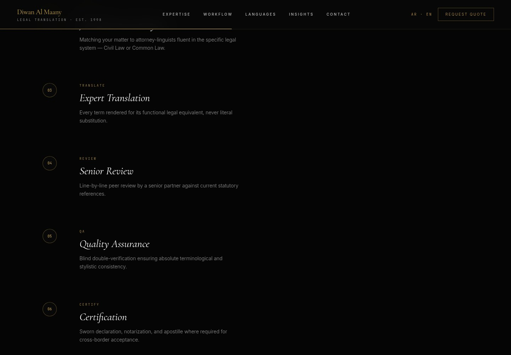
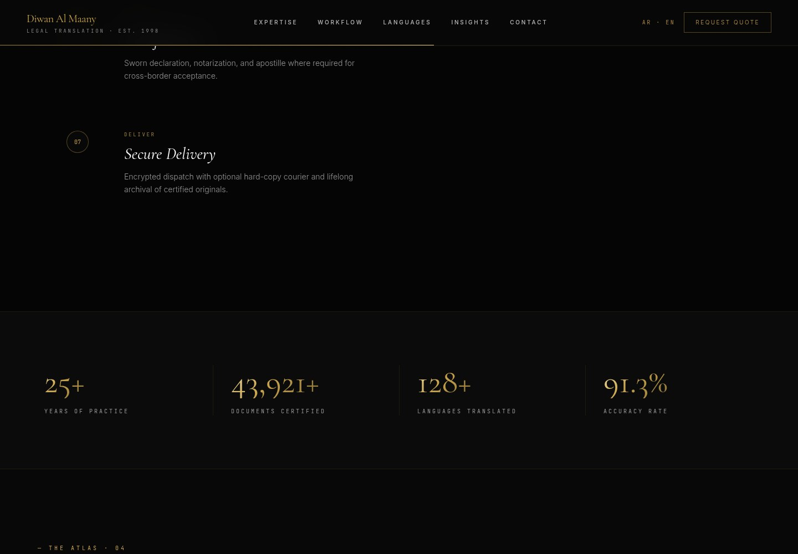
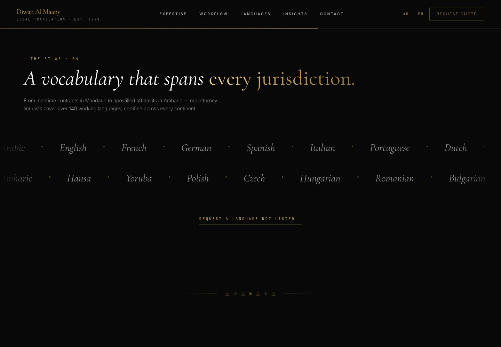
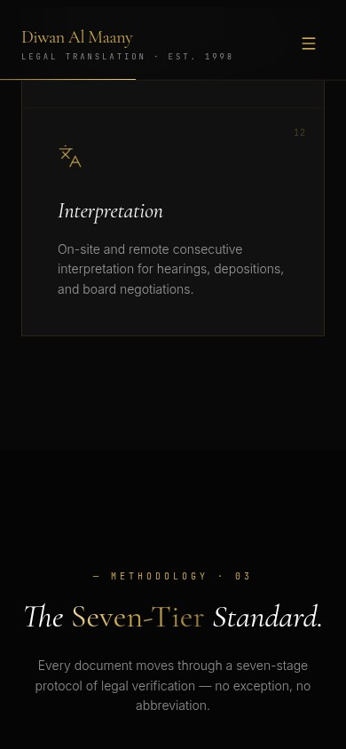
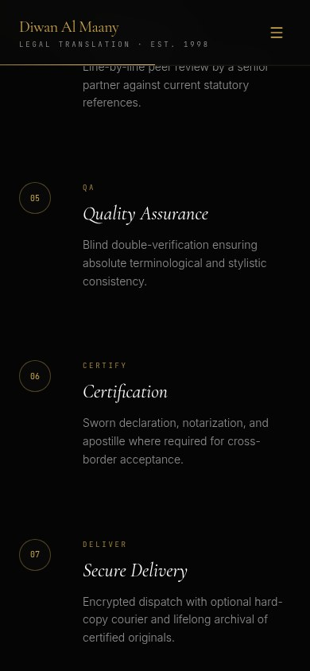
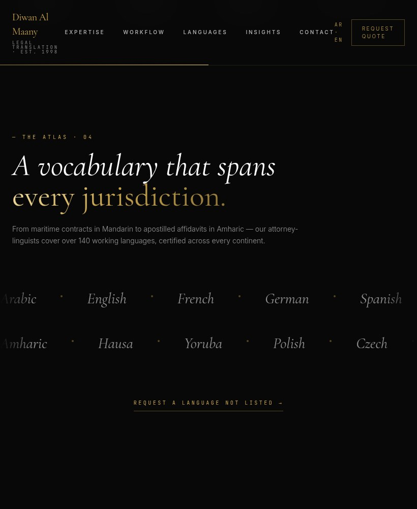

Diwan Al Maany
Legal meaning, carried across borders.

WHAT IT IS
Certified legal translation and related legal-document services
The single-page site presents Diwan Al Maany as a provider of sworn/certified legal translation, document and embassy authentication, contract/corporate legal support, interpretation, and multilingual legal consultation. This summarizes visible site copy, not independently verified business operations.
This case study documents what the linked website presents. Individual contribution to this project has not been confirmed.
WHAT THE WEBSITE OFFERS
- Homepage hero advertises sworn legal translation, contract drafting, and cross-border authentication; the displayed brand line reads ‘LEGAL TRANSLATION · EST. 1998’.
- A ‘Specialized Legal Translation Services’ section lists 12 categories, including Certified Litigation, Contracts & Agreements, Court Documents, Embassy Authentication, Company Registration, Legal Consultation, Document Authentication, Corporate Services, Personal & Family, Debt Collection, Dispute Resolution, and Interpretation.
- A ‘The Seven-Tier Standard’ section describes seven stages: Reception & Intake, Jurisdictional Analysis, Expert Translation, Senior Review, Quality Assurance, Certification, and Secure Delivery.
- A Languages section shows a scrolling/listed set of languages (including Arabic, English, French, Mandarin, Japanese, Amharic, Hausa, Thai, and others) and claims coverage of over 140 working languages.
- An Insights section displays three article teaser cards: ‘The semantic weight of “force majeure” across jurisdictions’, ‘Why machine translation will never sign a legal document’, and ‘From scribe to sworn translator: a two-millennia continuum’. Clicking the first card led to the homepage root fragment (#), not an article detail page.
- A five-question FAQ is visible; opening ‘Are your translations accepted by foreign courts and embassies?’ reveals an answer about sworn/certified/notarized translations and apostille or consular legalization.
- The contact area visibly presents WhatsApp and direct-line numbers, a legal-enquiry email address, a Cairo chambers address, and a consultation form with Full name, Email address, Subject matter, Brief description, and a Request Consultation button.
- The header displays an ‘AR · EN’ language control and anchor navigation for Expertise, Workflow, Languages, Insights, and Contact; switching language was not tested.
VISITOR JOURNEY
Clicking Expertise, Workflow, Languages, Insights, and Contact in the header navigates to corresponding homepage anchors (#services, #workflow, #languages, #insights, #contact).
AUTHENTIC SCREEN CAPTURES · 11
Inside the experience.
Genuine, distinct screen captures supplied for this project. No screenshots have been fabricated or duplicated.









